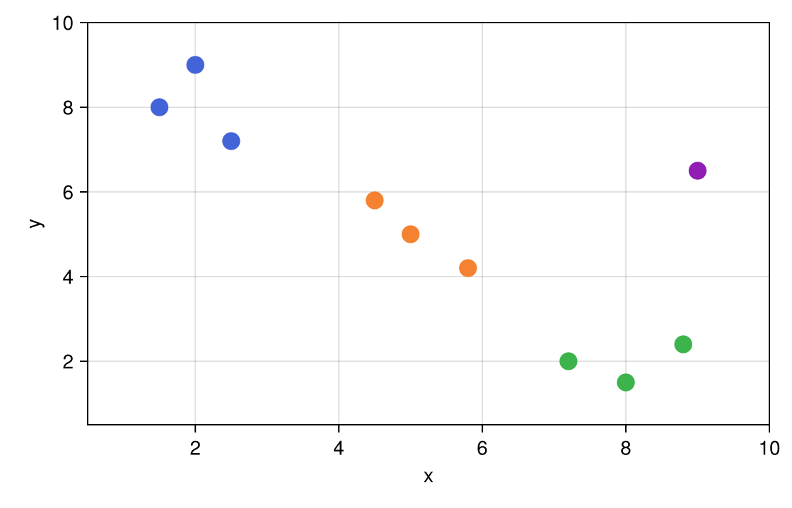

Brush a region
Drag a box across a plot and release it; the notebook gets what the box covers. That can be the points inside it, a block of heatmap cells, or just the box's coordinates. While you drag, only the box moves — Julia runs once, when you let go.
Drag the box over the stations below. The table lists the ones inside:
Notebook as text
Drag the box over some stations. The last cell lists the ones inside.
Draw the scatter the way you already draw it. Pass that scatter to PointInteractable, with the station rows as payloads, so a hover reads the name and the group. ROIInteractable brushes those points.
begin
samples = [
(name = "North-1", x = 1.5, y = 8.0, group = "North"),
(name = "North-2", x = 2.5, y = 7.2, group = "North"),
(name = "North-3", x = 2.0, y = 9.0, group = "North"),
(name = "Mid-1", x = 5.0, y = 5.0, group = "Mid"),
(name = "Mid-2", x = 5.8, y = 4.2, group = "Mid"),
(name = "Mid-3", x = 4.5, y = 5.8, group = "Mid"),
(name = "South-1", x = 8.0, y = 1.5, group = "South"),
(name = "South-2", x = 8.8, y = 2.4, group = "South"),
(name = "South-3", x = 7.2, y = 2.0, group = "South"),
(name = "East", x = 9.0, y = 6.5, group = "East"),
]
group_color = Dict(
"North" => "#4363d8",
"Mid" => "#f58231",
"South" => "#3cb44b",
"East" => "#911eb4",
)
fig = Figure(size = (560, 360))
ax = Axis(fig[1, 1]; xlabel = "x", ylabel = "y", limits = (0.5, 10.0, 0.5, 10.0))
s = scatter!(
ax, [p.x for p in samples], [p.y for p in samples];
color = [group_color[p.group] for p in samples],
markersize = 18,
)
pts = PointInteractable(ax, s; id = :pts, payloads = samples)
roi = ROIInteractable(ax; bounds = (4.0, 6.5, 3.8, 6.5), selects = :pts)
nothing
end@bind picks stores the stations inside the box when you release. Dragging moves the box and does not change picks.
@bind picks masque(fig, [pts, roi])
Before a drag, picks is nothing. An empty box is an empty list. Otherwise picks is the stations inside, and this cell builds the table.
if picks === nothing
md"*Drag the box over some stations, then release.*"
elseif isempty(picks)
md"*No stations in the box.*"
else
rows = samples[picks]
md_rows = ["| Station | x | y | Group |", "|---|---:|---:|---|"]
for r in rows
push!(md_rows, "| $(r.name) | $(r.x) | $(r.y) | $(r.group) |")
end
Markdown.parse("**$(length(rows)) stations**\n\n" * join(md_rows, "\n"))
endPick the points inside a box
An ROIInteractable draws the box; selects names the layer whose marks it collects. Give the points an id so the box can refer to them, and pass both to the same masque call:
pts = PointInteractable(ax, s; id = :pts, payloads = samples)
roi = ROIInteractable(ax; bounds = (4.0, 6.5, 3.8, 6.5), selects = :pts)@bind picks masque(fig, [pts, roi])bounds is where the box starts, as (xmin, xmax, ymin, ymax) in data coordinates. After a release, picks is a Vector{ElementEvent} with one event per enclosed point, and the points inside stay highlighted. An empty box gives an empty vector, not nothing, so one isempty check covers it. Each event carries its point's payload (e.name, e.group), and the vector indexes your data directly: samples[picks] is the rows inside the box.
If your rows are a DataFrame, pass it as payloads — one row per point, in the order you plotted them — and slice it with the events:
pts = PointInteractable(ax, s; id = :pts, payloads = df)picks === nothing || isempty(picks) ? df[1:0, :] : df[picks, :]The box owns the value: the points still show their tooltips, but clicking one commits nothing from that layer, so picks stays what the box holds. The click passes through, so a clickable layer underneath (such as an AxisInteractable) still takes it.
Brush heatmap cells
Point selects at a heatmap or image layer instead, and the box returns one GridWindowEvent describing the block of cells it covers: win.i1:win.i2 columns and win.j1:win.j2 rows, so A[win] is that sub-matrix. The box owns the value: clicking a cell outside it shows the tooltip but leaves the value alone, so the value is always a GridWindowEvent. See Inspect a grid.
Read the box itself
Leave out selects and the value is the box: a BoundsEvent with xmin, xmax, ymin, and ymax. Use this when the region is the result — a time window, a crop, a range to fit over. bounds accepts a BoundsEvent too, so one widget's box can seed another's; passing a widget its own box back would be a cyclic reference in Pluto.
Moving and resizing
Drag inside the box to move it, a corner to resize it in both directions, or the middle of an edge to move just that edge; the pointer changes to show which. If the axis also has a ViewInteractable, a plain drag moves the box and Shift+drag pans the plot. The box cannot be moved with the keyboard.
Where it works
The box needs a 2D Axis with numeric limits and a scale the browser can invert (identity, log10, or log); on an Axis3, a PolarAxis, or a categorical axis it raises an ArgumentError when masque runs. selects can name a layer of points or a heatmap/image, and that layer must be in the same masque call; bars and lines cannot be brushed. See Supported plots and axes.
For a larger example, Box-select scatter summarizes two groups of points inside the box, and Image ROI brushes an image.